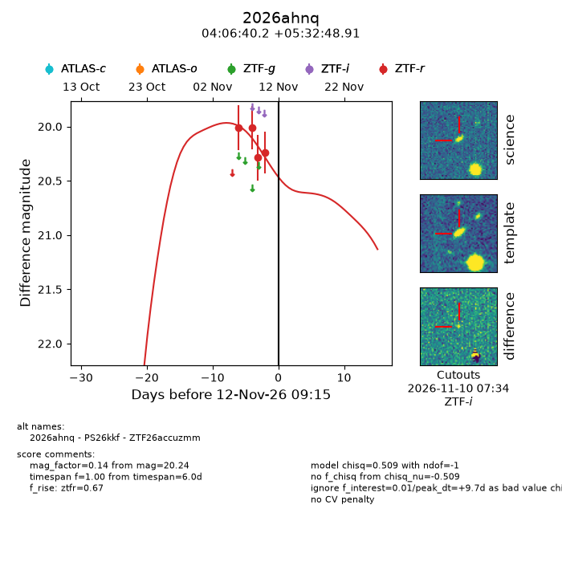
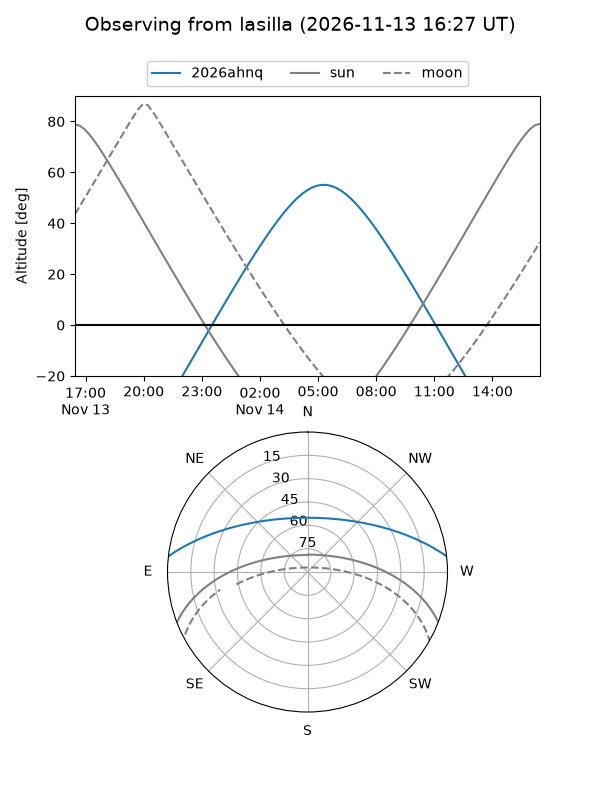
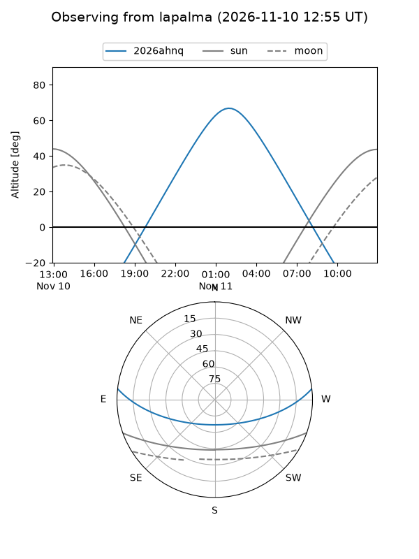
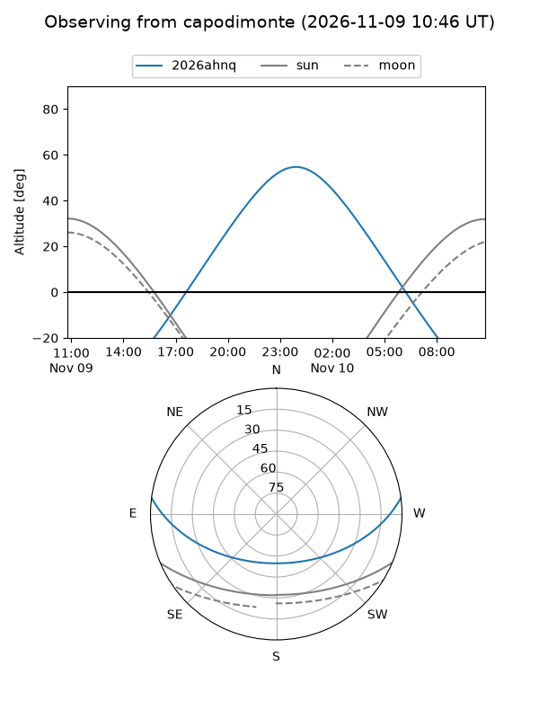
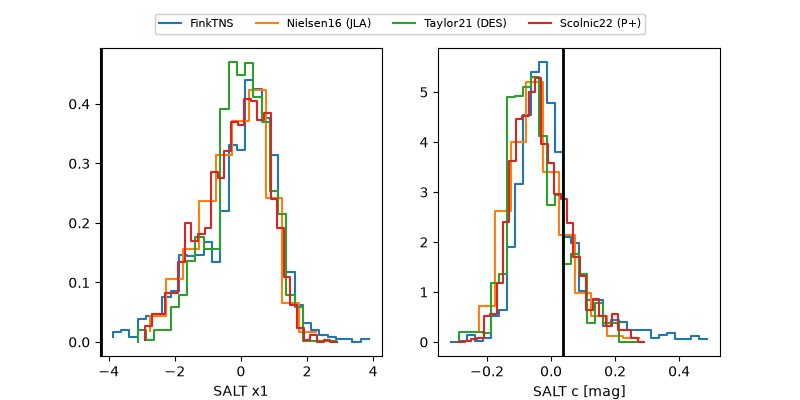

2026ahnq
Target 2026ahnq at 2026-11-12 09:20
Aliases and brokers:
FINK-ZTF: ztf.fink-portal.org/ZTF26accuzmm
Lasair-ZTF: lasair-ztf.lsst.ac.uk/objects/ZTF26accuzmm
ALeRCE-ZTF: alerce.online/object/ZTF26accuzmm
YSE-PZ: ziggy.ucolick.org/yse/transient_detail/2026ahnq
TNS name: wis-tns.org/object/2026ahnq
Direct TNS query: direct search
alt names
ZTF26accuzmm (ztf,fink_ztf)
2026ahnq (tns,yse)
PS26kkf (panstarrs)
Coordinates:
equatorial (ra, dec) = 61.6673,+5.54692
equatorial (HMS+DMS) = 04:06:40.16,+05:32:48.91
galactic (l, b) = (185.7319,-32.63691)
Flags:
peak dt: +9.7
Photometry:
last ztfr=20.24
4 ztfr detections
Lightcurve

Visibility



Additional plots
